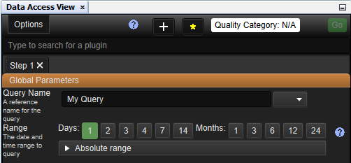
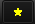

Data Access View
Data Access View Actions
| Constellation Action |
Keyboard Shortcut |
User Action |
Menu Icon |
|
Open Data Access View
|
Ctrl + Shift + D
|
Views -> Data Access View
|
|
Introduction
Data Access View is the interface for interacting with Constellation plugins that involve data.
It allows users to perform queries that do things such as import, enrich, and clean data, all from the one window.

Running Queries
At the very top, there is a list of tabs.
Pressing the  button allows steps to be added (as tabs), and the X in the tab name will remove it.
Tabs can be customised to perform different queries, and when ready, pressing the
button allows steps to be added (as tabs), and the X in the tab name will remove it.
Tabs can be customised to perform different queries, and when ready, pressing the  button will cause each tab to run their queries sequentially.
The Go button will only highlight once a check box has been selected and a graph has been opened.
button will cause each tab to run their queries sequentially.
The Go button will only highlight once a check box has been selected and a graph has been opened.
In the tab, users can enter values for the global parameters that will apply to every query they run in that tab.
The Range option allows users to specify the time period they wish to run the query.
Selecting one of the Days or Months buttons will run the query from that many months or days ago to the present day.
Alternatively, a custom time period can be selected by pressing custom and inputting a from and to date.
From the tabs below, users can select which queries they wish to run.
The arrows allow options to be visible or hidden.
Selecting the checkbox next to the name of the query will cause that query to run when Go is pressed.
NOTE: Queries in the Data Access View typically only run on selected nodes and transactions.
NOTE: When Go is pressed, the values of the parameters in Global Parameters and any other plugins
are saved as part of the graph's state so that when you save and load the graph, the last used values are restored.
Global Parameters
Refer to the Global Parameters page for more details on the global parameters section.
Filtering
You can filter plugins by typing in the search bar at the top of the view.
Alternatively, you can right click anywhere on the Data Access View and choose the "Find plugin..." option.
Favourites
You can add plugins to your favourites category by clicking on  which will allow you
to add or remove plugins you have selected from the favourites category.
Options Menu
Refer to the Options page for more details on the options menu.